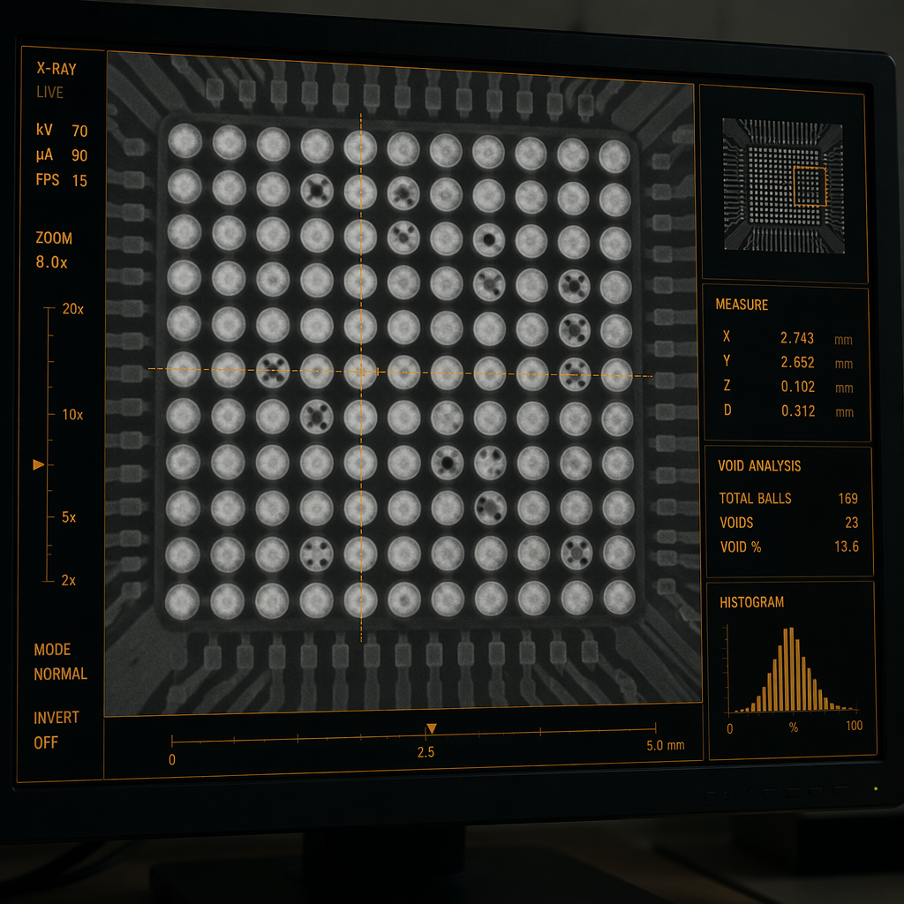

If there's one area where PCB buyers are systematically underserved, it's testing. Most procurement professionals know they need "AOI and electrical test." But they can't tell you what an AOI machine actually finds, what a flying probe tester measures that AOI doesn't, or why X-ray inspection exists as a separate category from both. The result: boards that pass all "standard testing" still fail in the field — because the wrong test was specified for the wrong defect type.
This guide covers the five testing methods used in professional PCB assembly — what each one detects, what each one misses, what they cost, and when you need which combination. We run all five in-house across our 15,000㎡ Shenzhen facility, so the data below comes from real experience, not datasheets.
The fundamental insight: No single test method catches everything. AOI sees surface defects but not hidden joints. X-ray sees hidden joints but not electrical opens. ICT catches electrical faults but not marginal solder joints. Functional test catches system-level issues but misses individual component defects. You need a test strategy — a combination of methods chosen for your specific board's failure modes — not a single test.
The Five Methods at a Glance
| Method | What It Detects | What It Misses | Cost per Board | Best For |
|---|---|---|---|---|
| AOI | Solder joint defects, missing/shifted components, bridging, insufficient solder | Hidden joints (BGA/QFN), electrical opens, component authenticity | $0.05-0.20 | All production volumes; first-pass quality screening |
| X-Ray | BGA/QFN voids, bridging under packages, head-in-pillow | Electrical opens, component value errors, firmware issues | $0.10-0.50 | BGA/QFN assemblies; failure analysis |
| Flying Probe | Opens, shorts, wrong-value passives, diode orientation, basic IC test | Marginal joints (passes electrically now, fails after thermal cycling) | $0.50-3.00 | Prototypes, low volume, high mix |
| ICT | Same as flying probe but faster; also powered analog measurements | Same blind spots as flying probe; fixture development cost | $0.10-0.30 (after fixture) | Production volumes >500 pcs |
| FCT | System-level function: power sequencing, firmware boot, communication, analog signals | Individual component tolerances; intermittent faults not triggered during test | $1.00-10.00+ | Turnkey PCBA; safety-critical applications |
1. Automated Optical Inspection (AOI)

AOI is the first line of defense after reflow soldering — and for many manufacturers, the only line. High-resolution cameras (typically 10-25 megapixel) capture images of every solder joint at multiple angles and lighting conditions. The system compares each image against a "golden board" reference or CAD data, flagging deviations in solder volume, shape, position, and color.
What AOI excels at: Surface-level defects that are geometrically obvious. Tombstoned components (standing on end). Bridging between adjacent pins. Insufficient or excessive solder on visible joints. Missing or shifted components. Wrong component orientation (polarity markings, pin 1 indicators). These defects account for roughly 70% of all SMT assembly failures — which is why AOI is the standard first-pass inspection method.
What AOI cannot see: Anything underneath a component body. The solder joints under a BGA — the most critical connections on many modern boards — are completely invisible to AOI. The thermal pad under a QFN is invisible. Solder joints inside plated through-holes are difficult for AOI to evaluate. A board can pass AOI with zero flags and still have a catastrophic BGA void that will fail after 50 thermal cycles.
AOI limitations by package type: QFP and SOIC joints: fully inspectable. Chip components (0201-1206): fully inspectable. BGA: 0% inspectable (must use X-ray). QFN thermal pad: 0% inspectable. LGA (land grid array): 0% inspectable. Connectors with hidden-row pins: limited inspectability.
On our lines, AOI flags approximately 3-7% of boards for operator review. Of those flagged, roughly 15-25% are confirmed defects requiring rework. The rest are false positives — acceptable joints that the algorithm flagged as marginal. This ratio is normal and expected; tuning the algorithm for zero false positives means accepting real defects.
2. X-Ray Inspection

X-ray inspection exists because BGAs and QFNs exist. These packages hide their most critical connections underneath the component body, where no camera — optical or otherwise — can see them. X-rays penetrate the component and the PCB, producing a 2D or 3D image of the solder joints based on material density: solder (dense) appears darker, voids (air gaps) appear lighter, and the silicon die and substrate appear at intermediate densities.
What X-ray detects:
- Voids: Gas pockets trapped in the solder joint during reflow. IPC-A-610 Class 3 allows a maximum void size of 20% of the ball diameter. A void reduces the joint's mechanical strength and thermal conductivity — a BGA ball with a 35% void may pass electrical test today and crack after 200 thermal cycles.
- Bridging: Solder connecting two adjacent BGA balls that should be separate. At 0.4mm pitch, the gap between balls is ~0.2mm — a single solder bridge can short power to ground and destroy the board on first power-up.
- Head-in-Pillow (HIP): The BGA ball and the solder paste deposit make physical contact but don't fuse. The joint looks connected in X-ray (the ball and paste are touching) but has no metallic bond. HIP defects are notoriously intermittent — they pass electrical test at room temperature and fail when the board heats up and thermal expansion separates the joint.
- Insufficient solder: The joint has less solder than specified, typically due to stencil aperture issues or paste printing defects.
2D vs 3D
2D vs 3D X-ray: 2D X-ray (transmission) produces a single image from above. It can detect bridging and major voids but struggles with multi-row BGAs where joints overlap in the image. 3D X-ray (computed tomography / laminography) reconstructs cross-sectional "slices" through the joint layer, revealing individual ball quality in even the densest packages. 3D is standard for aerospace, medical, and automotive Class 3 assemblies. 2D is adequate for Class 2 commercial products.
At Huaxing: We X-ray 100% of BGA and QFN assemblies. For boards without hidden-package components, X-ray sampling is performed at a rate determined by product risk classification. Our X-ray systems can resolve voids down to 5µm — well below the threshold that affects joint reliability.
3. Flying Probe Testing

Flying probe testing is electrical validation without a custom fixture. Two to six robotic probes move independently across the board, touching test points — component pads, vias, dedicated test pads — in a programmed sequence. At each contact, the system measures resistance between points (to detect opens and shorts), capacitance and inductance (to verify passive component values), and diode characteristics (to verify orientation and functionality).
The key advantage over ICT: No fixture cost. A flying probe program is generated directly from your CAD data — Gerber files, netlist, and BOM. This makes flying probe the default choice for prototypes (where fixture cost can't be amortized), low-volume production (under 500 pieces), and high-mix environments (where you'd need a different ICT fixture for every design).
The trade-off: Speed. A flying probe test takes 1-5 minutes per board depending on net count and test coverage. An ICT machine with a bed-of-nails fixture tests the same board in 5-15 seconds. For a 10-board prototype order, the 10-minute difference is irrelevant. For a 10,000-board production order, it's the difference between a 3-hour test run and a 3-day test run.
What flying probe can and can't do: It detects opens on any net it can access (high coverage with good test point design). It detects shorts between nets that should be isolated. It measures passive component values — resistors within 1-5%, capacitors within 5-10% — and flags components that are wrong-value, wrong-tolerance, or missing entirely. It can verify basic semiconductor function: diode polarity and forward voltage, transistor type, and simple IC presence (by detecting protection diodes on I/O pins).
What it cannot do: powered functional testing (the board is unpowered during flying probe test). Marginal joint detection (a cracked solder joint may measure 0.1Ω today and open-circuit after vibration). High-frequency measurements above a few MHz.
4. In-Circuit Testing (ICT)
ICT is flying probe's older, faster sibling. A bed-of-nails fixture — a custom-machined plate with spring-loaded pogo pins precisely positioned at every test point — makes simultaneous contact with hundreds of points across the board. The test system then runs through a programmed sequence of measurements in rapid succession.
When ICT makes economic sense: The fixture costs $1,000-5,000 depending on complexity (number of test points, double-sided access, fine-pitch probing). At 500 pieces, that's $2-10 per board in amortized fixture cost — typically less than the cost of flying probe test time for the same coverage. At 10,000 pieces, fixture cost per board is negligible.
ICT capabilities beyond flying probe: Powered testing — the fixture can apply power to the board and measure voltages at test points, verifying power supply regulation, voltage dividers, and reference voltages. Guarding — isolating a component from surrounding circuitry for accurate measurement by driving guard points to the same potential. And, critically, throughput: ICT tests a board in seconds where flying probe takes minutes.
Fixture design matters: A poorly designed ICT fixture probes at angles that damage pads, applies excessive force that flexes the board, or skips test points on fine-pitch components where probe access is tight. A well-designed fixture includes the right probe tip geometry for each pad type, controlled-force mechanisms, and registration pins that ensure repeatable alignment across thousands of cycles. The fixture cost goes into the engineering, not the metal.
5. Functional Testing (FCT)

Functional testing is the final quality gate — and the most application-specific. Unlike the first four methods, which test electrical connectivity and component presence, FCT tests whether the board does what it's supposed to do in conditions that simulate its operating environment.
A functional test typically powers up the board, loads firmware (if applicable), and exercises the board's interfaces: applying input signals and measuring output responses, communicating over UART/SPI/I2C/CAN buses, cycling relays and measuring contact resistance, verifying analog signal paths with known test waveforms. The test fixture may include load simulators, communication interfaces, signal generators, and measurement instruments — all controlled by a test executive that sequences through the test plan and logs results.
What FCT catches that nothing else does:
- Integration defects: A correctly-soldered component with the wrong firmware revision passes AOI, X-ray, and ICT — but fails FCT when the firmware can't communicate with the peripheral it was compiled for.
- Timing issues: Power sequencing violations, bus timing violations, and race conditions that don't manifest as hard electrical faults but cause intermittent system failures.
- Analog performance: A DAC that outputs the correct voltage but has 5× the specified noise. A filter stage that attenuates 3dB more than designed. These pass digital tests but fail analog functional tests.
$1-10K
FCT development cost: A functional test fixture typically costs $1,000-10,000+ to develop, depending on the number of interfaces, the complexity of the test executive, and whether the customer provides existing test infrastructure. For safety-critical products (automotive ECUs, medical devices), FCT is non-negotiable — the cost of a field failure dwarfs the fixture investment by orders of magnitude.
Choosing the Right Test Strategy
The optimal test strategy depends on five factors: board complexity, production volume, package types used, end-application criticality, and acceptable defect escape rate.
| Product Profile | Recommended Strategy |
|---|---|
| Simple 2-layer, no BGA, low volume (<100) | AOI + flying probe |
| Medium complexity, QFN only, mid volume (100-1000) | AOI + flying probe + X-ray sampling |
| BGA design, production volume (1000+) | AOI + 100% X-ray + ICT |
| Automotive/medical, any volume | AOI + 100% 3D X-ray + ICT + FCT |
| Turnkey PCBA (customer needs finished, tested product) | AOI + X-ray + flying probe/ICT + full FCT |
| Aerospace/defense, any volume | All five, 100% coverage, + environmental stress screening |
The golden rule: The cost of catching a defect increases by roughly 10× at each stage. A solder paste defect caught at SPI costs ~$0.01 to fix (clean and reprint). The same defect caught at AOI costs ~$0.10 (rework one joint). Caught at ICT costs ~$1 (diagnose and rework). Caught at FCT costs ~$10 (diagnose complex system failure). Caught in the field costs ~$100-1,000+ (RMA, investigation, customer impact). Invest in earlier-stage testing.
What We Actually Do
At Huaxing PCBA, our standard test flow for production orders is:
- SPI (Solder Paste Inspection) — 100% of boards, before component placement. Catches the defects that would cause the most expensive downstream failures.
- AOI — 100% of boards after reflow. First-pass screening for visible defects.
- X-Ray — 100% for BGA/QFN boards; sampling for other designs. Hidden joint verification.
- Flying Probe or ICT — 100% of boards. Electrical validation. Flying probe for prototypes and low volume; ICT for production volumes >500.
- Functional Test — Per customer specification. Custom fixture and test executive developed in-house or to customer-provided test protocol.
99.7%
This five-stage test flow achieves a field defect rate under 0.3% across all product categories — meaning fewer than 3 boards per 1,000 shipped require rework or return. For context, the industry average for PCB assembly defect escape rate is 1-3%. The difference is entirely in the testing strategy — not in having better machines, but in using them comprehensively.
Questions to Ask Your Manufacturer
When evaluating a PCB assembly supplier, don't ask "do you test your boards?" — every manufacturer says yes. Ask these instead:
- "What percentage of boards get X-ray inspection? If it's not 100% for BGA boards, what's your sampling plan?"
- "Do you run AOI and electrical test on every board, or do you sample?"
- "Do you have SPI (solder paste inspection) on your SMT lines?"
- "Can you provide test data reports — AOI images, X-ray void analysis, ICT/flying probe pass/fail logs — with every shipment?"
- "What's your documented field defect rate for products similar to ours?"
A manufacturer who answers these questions with specific numbers, percentages, and documentation references is running a real quality operation. One who answers with "we test everything, don't worry" is not — and your boards will prove it.